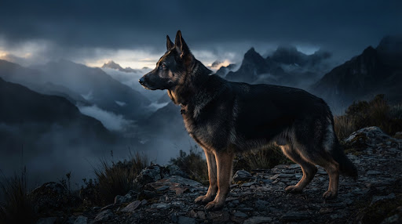
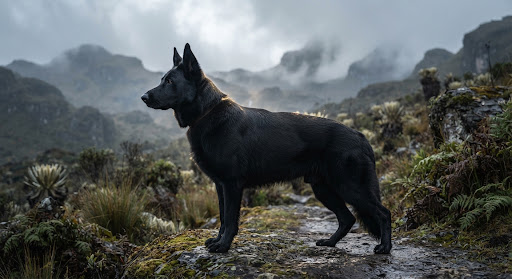
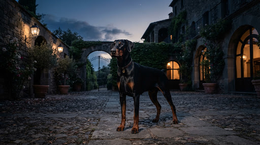
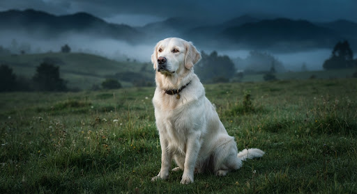
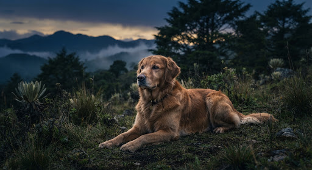
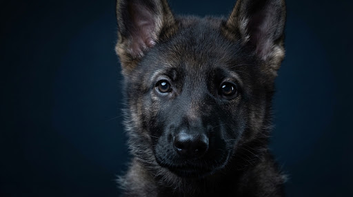
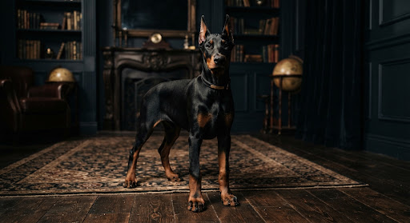
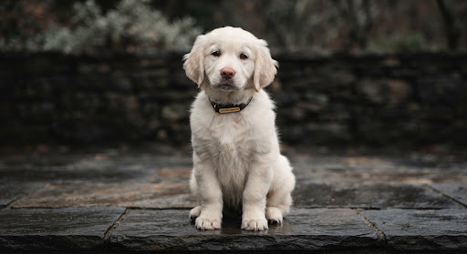
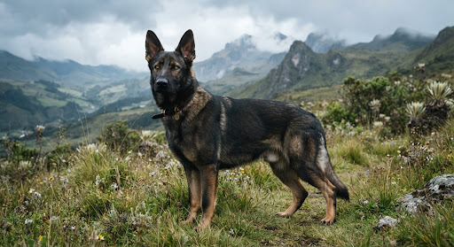

Genética, carácter y crianza con registro
Líneas de sangre seleccionadas bajo los más rigurosos estándares de salud, estructura y temperamento.
años de experiencia
líneas de sangre
camadas al año
ejemplares entregados
Nuestras líneas
Programas reproductivos minuciosamente planificados que priorizan la estabilidad nerviosa, la salud articular y la nobleza morfológica.

Línea Imperial del Norte
Enfocada en temple inquebrantable, tenacidad operativa y una lealtad absoluta para custodia patrimonial y compañía familiar.
- Temperamento equilibrado y resiliencia
- Estructura ósea certificada y balanceada
- Salud y longevidad comprobada [registro por confirmar]

Línea Linaje Azul
Elegancia aristocrática, distinción en porte y una capacidad innata para la convivencia en hogares que valoran la alta crianza.
- Temperamento equilibrado y serenidad
- Estructura ósea certificada (caderas y codos 0/0)
- Salud y longevidad comprobada con pruebas cardio DCM

Línea Guardián Noble
Sensibilidad extraordinaria, dulzura insuperable y morfología clásica adaptada a programas de asistencia y entornos familiares de alto nivel.
- Temperamento equilibrado y docilidad probada
- Estructura ósea certificada BVA/OFA
- Salud y longevidad comprobada mediante perfil ADN

Instalaciones campestres bioclimáticas en la Sabana de Bogotá, Colombia.
Ética, rigor genotípico y serenidad en la crianza
En Criadero Luna Azul, concebimos la crianza no como una producción seriada, sino como una labor de preservación y perfeccionamiento biológico. Cada cruzamiento responde a un riguroso análisis fenotípico y de compatibilidad genómica que busca erradicar anomalías congénitas y maximizar la vitalidad estructural.
Ubicados en el entorno privilegiado de la Sabana de Bogotá, nuestros ejemplares crecen con protocolos sistemáticos de estimulación neurológica temprana, enriquecimiento sensorial y socialización progresiva. Creemos firmemente que la solidez psicológica de un canino adulto se cimenta en el respeto a sus ritmos biológicos y el afecto consciente de los primeros sesenta días de vida.
Nuestra misión en Colombia es elevar el estándar canófilo, garantizando ejemplares con pedigrí de pureza indiscutible [asociación por confirmar] y un temperamento capaz de integrarse con distinción en hogares que comprenden la magnitud de su linaje.
— [Nombre del propietario], Criadero Luna Azul
Dirección Genética & Crianza ResponsableEjemplares disponibles
Cada ejemplar cuenta con identificación por microchip subcutáneo, esquema sanitario al día y certificación de linaje.

Luna Azul Valkir
Pastor Alemán de Trabajo

Luna Azul Dante
Dobermann Europeo

Luna Azul Morgana
Golden Retriever Británico

Luna Azul Ciro
Pastor Alemán de Trabajo
El proceso de reserva
Un itinerario transparente y estructurado para asegurar la asignación armónica entre ejemplar y familia.
1. Evaluación y Asesoría Genética
Entrevista preliminar para comprender su estilo de vida, expectativas funcionales y experiencia previa. Determinamos conjuntamente la línea de sangre y el ejemplar idóneo.
2. Formalización de la Reserva
Firma del acuerdo de crianza ética y depósito de garantía. Se remite el árbol genealógico certificado de 5 generaciones y el reporte médico prenatal de la camada.
3. Entrega y Seguimiento Vitalicio
Recepción entre las semanas 8 y 10 con microchip, esquema sanitario oficial y carné sanitario. Brindamos asesoría nutricional, conductual y veterinaria indefinida.
Preguntas frecuentes
¿Qué documentación y registro de pedigrí acompaña al ejemplar? expand_more
¿A qué edad se realiza la entrega y cómo se gestiona el destete?
Detalles del destete
expand_more
¿Cuál es el alcance de la garantía genética y de salud? expand_more
¿Cómo funciona el transporte y la logística en el territorio colombiano? expand_more
¿Es posible visitar las instalaciones del criadero? expand_more
Solicitud de Reserva o Consulta
Diligencie los campos para iniciar el diálogo con nuestra dirección de crianza.
Criadero Luna Azul
Finca campestre dedicada exclusivamente a la investigación reproductiva, preservación y crianza canina de linaje comprobado.
[Ubicación / Finca por confirmar, Sabana de Bogotá, Colombia]
[Teléfono por confirmar]
[correo@lunaazul.com por confirmar]
NIT: [NIT por confirmar]
Afiliación canófila: [asociación por confirmar]
Toda la información remitida es tratada bajo estricta reserva y utilizada con el único propósito de asesorar la incorporación de un ejemplar.